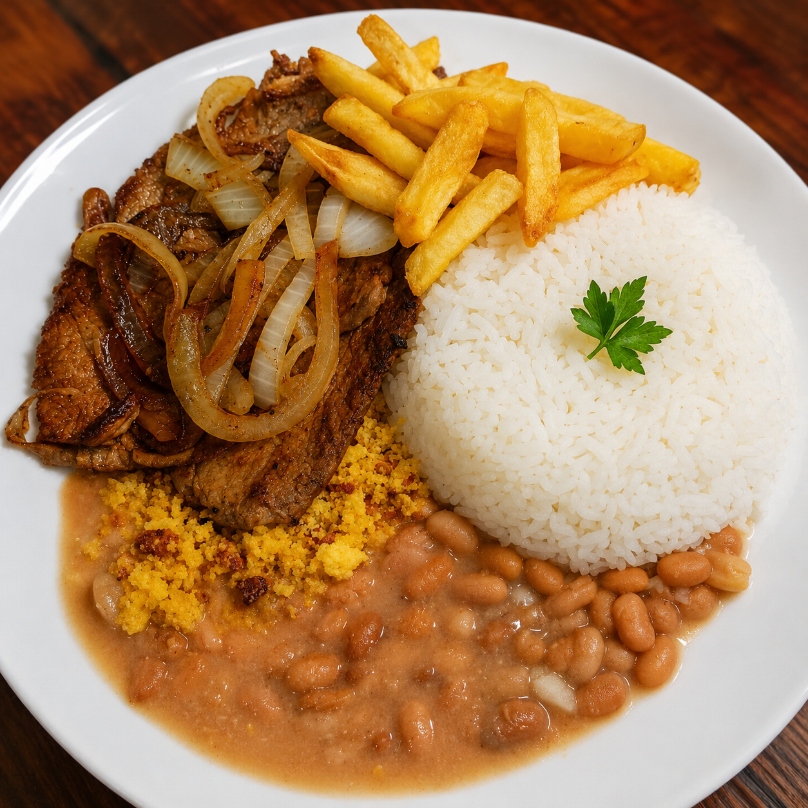
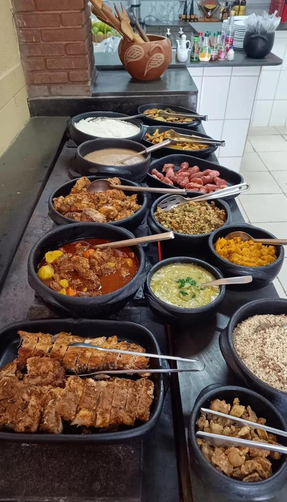
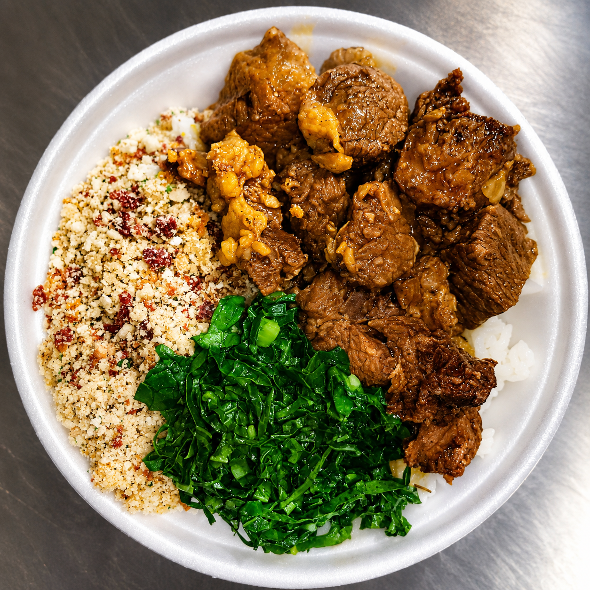
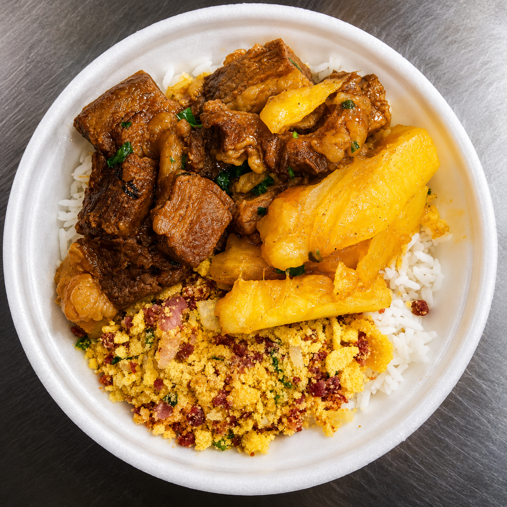
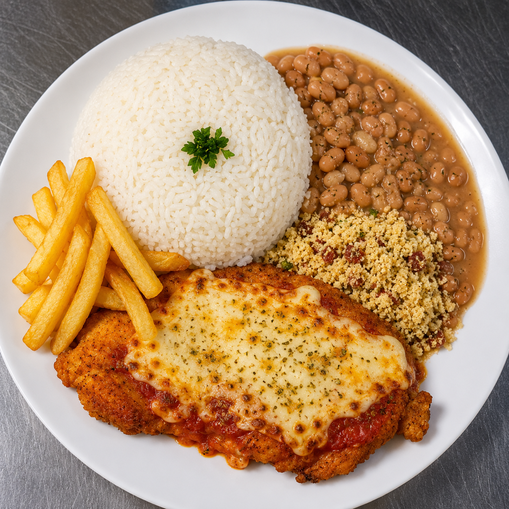

Mais pedidoBife acebolado
Arroz branco, feijão, farofa caseira, batata frita e bife acebolado no capricho.
R$ 24,90
prato feito
Pedir
A Sabor de Minas está de cara nova. Almoço feito com carinho, tempero caseiro, porção honesta e aquele atendimento que faz você querer voltar.

Consulte o cardápio pelo WhatsApp.
A Sabor de Minas está sob nova direção, com uma proposta simples: servir comida boa, fresca e bem feita, com respeito por cada cliente.
O restaurante continua com aquele estilo caseiro, mas agora com mais cuidado no preparo, melhor organização e atenção em cada detalhe. É uma nova história começando no prato de todo dia.
Conheça e faça seu pedido →O básico bem feito é o que faz a diferença no dia a dia.
Prato bem servido, com comida de verdade para matar a fome.
Preparo diário, comida com aparência bonita e sabor caseiro.
Opções variadas durante a semana, sempre com aquele tempero mineiro.
Fotos ilustrativas dos pratos. Você pode trocar as imagens na pasta img.

Mais pedidoArroz branco, feijão, farofa caseira, batata frita e bife acebolado no capricho.

DestaqueCarne bem temperada, couve refogada, farofa e arroz fresquinho para o almoço.

CaseiroCarne de panela com mandioca, arroz branco e farofa temperada.

EspecialFrango empanado com molho e queijo derretido, acompanhado de arroz, feijão, farofa e fritas.
Opções quentes, saladas, acompanhamentos e aquele tempero de comida caseira.
Ideal para quem quer variedade e comida fresca. Escolha suas opções, monte seu prato e aproveite uma refeição simples, saborosa e bem servida.


Os valores podem ser ajustados conforme o cardápio e os pratos do dia.
Arroz, feijão, proteína e acompanhamento
Opção prática para o dia a dia
Bem servida, com mais acompanhamento
Monte seu prato à vontade, cobrado por kg
Refrigerante, suco e opções do dia
Os valores podem mudar conforme o prato do dia. Consulte pelo WhatsApp para confirmar disponibilidade e preço atualizado.
Venha almoçar com a gente ou peça sua marmita pelo WhatsApp.
Almoço com mais qualidade, organização e respeito por você.
Sua avaliação no Google ajuda muito a nova direção a crescer e mostrar essa nova fase para mais pessoas.
Depois de almoçar com a gente, conte como foi sua experiência. É rápido e ajuda outras pessoas a conhecerem a Sabor de Minas.
⭐ Avaliar no GoogleVamos atualizar o Instagram com fotos dos pratos, cardápio do dia, horários e novidades da nova direção.
Estamos esperando você na Sabor de Minas.
Avenida Nelson Leardine, nº 150
Parque São Francisco - Itatiba/SP
Referência: ao lado da oficina
Avenida Nelson Leardine, nº 150
Parque São Francisco - Itatiba/SP
Ao lado da oficina